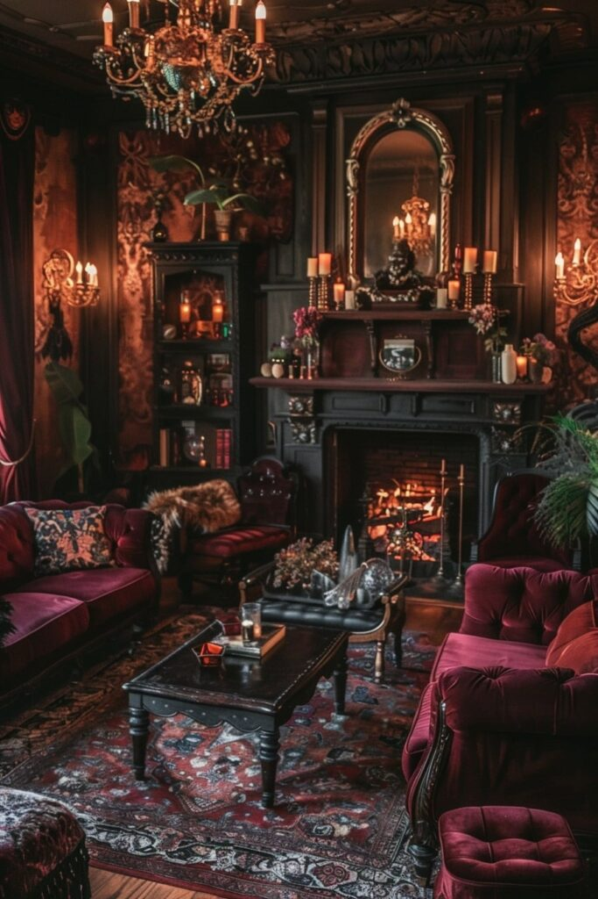
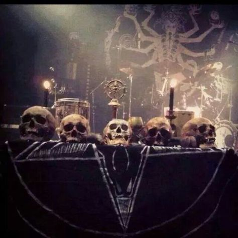
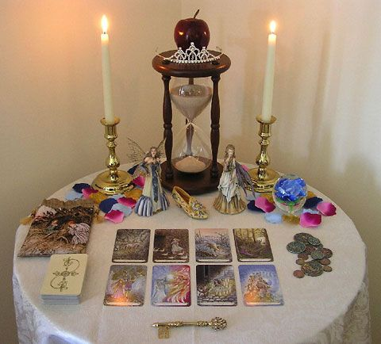

Hallow are a sacred place that Mages creates for Oblation and Meditation. It’s a safe haven for the Mages and a focal point for the supernal in the Fallen World. Hallows take a variety of shapes and forms, conforming to the Mage’s views, expectations and perspectives of the Supernal. They can be simple and small, created by a Mage in his own home (mostly do), or big sacred places created by a Cabal or an Order.
Examples:


